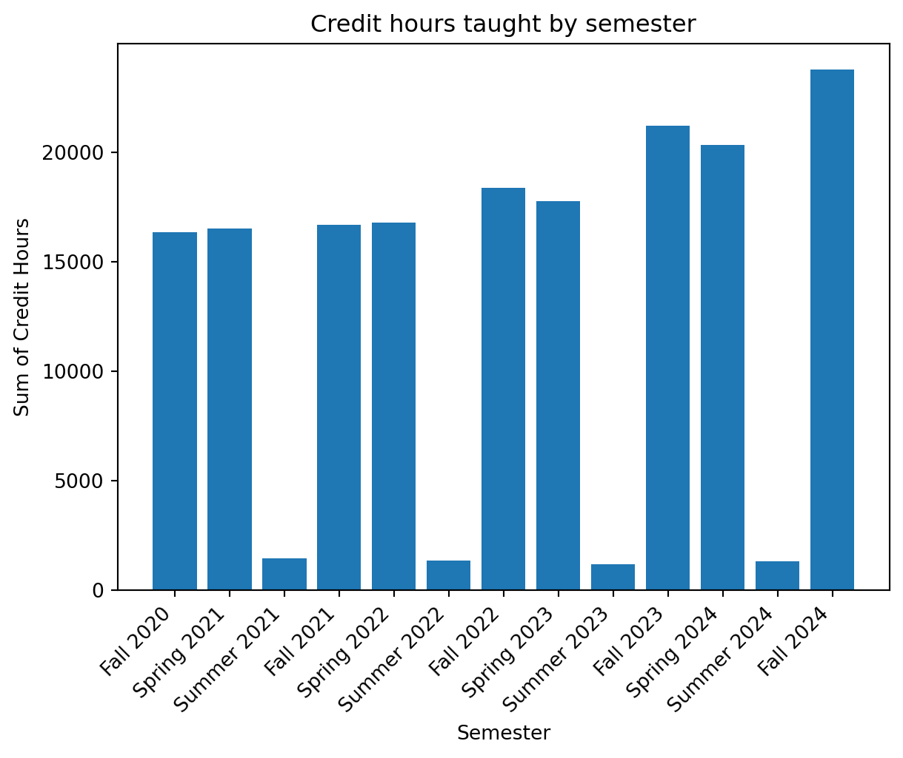
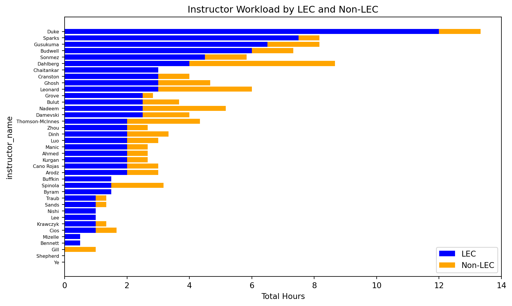

Here is a summary table with all the data needed to display.
You’ll need to recreate the sample table using OJS using the stacked_df.csv file.
Here is an example worksheet of the underlying details (the pop-up card). This table shows all instructors, the pop-up should show only the data for the hovered instructor.
Columns in the dataframe
Load the data frame. The OJS code would like slightly different.
# Load the data framestacked_df = pd.read_csv('stacked_df.csv')# Strip whitespace from column namesstacked_df.columns = stacked_df.columns.str.strip()# Force types of these columns to be stringsfor col in ['TERM','COURSE','SECT']: stacked_df[col] = stacked_df[col].astype(str)# print the columns. Pandas will display an abbreviated table.print(stacked_df.columns)
Number of Courses : A course is designed by a course number, for example, CMSC 508 or CMSC 210 or CMSC 355. In the table below, we present the sum of unique course numbers.
Number of CRNs : A CRN is a “course reference number”. Often a single course will be coded in Banner using multiple CRNS, one for each unique meeting time/place. The CRN SUM column presents the sum of individual CRNs.
StuMtgSum : number of individual student meetings. Student enroll in CRNs, not courses. The stumtgsum measure represents the sum of students across all CRN. Depending on how a course is coded, this may double count students in an individual course.
Hours Sum : There are several ways to calculate this variable. In general, this is calculated on a PER CRN basis, multiplying the unique headcount in the CRN time the credit-hour value of a course (usually, 2, 3 or 4).
The table below shows these key measures accumulated by all semesters in the data set.
# Create my four desired columns# lecture hours and non-lecture hoursstacked_df['sum_term_crse_crn_hours_lec'] =0.0stacked_df['sum_term_crse_crn_hours_non_lec'] =0.0stacked_df.loc[stacked_df['wrkld_sample_type'] =='LEC', 'sum_term_crse_crn_hours_lec'] = stacked_df['sum_term_crse_crn_hours']stacked_df.loc[stacked_df['wrkld_sample_type'] !='LEC', 'sum_term_crse_crn_hours_non_lec'] = stacked_df['sum_term_crse_crn_hours']# lecture workload and non-lecture workloadstacked_df['sum_term_crse_wrkld_sample_lec'] = stacked_df['sum_term_crse_wrkld_sample_lec']stacked_df['sum_term_crse_wrkld_sample_non_lec'] = stacked_df['sum_term_crse_wrkld_sample'] - stacked_df['sum_term_crse_wrkld_sample_lec']
summary_df = stacked_df.groupby(['TERM','period_name']).agg( {'sum_term_crse':'sum','sum_term_crse_crn':'sum','sum_term_crse_crn_mtg_students':'sum','sum_term_crse_wrkld_sample_lec':'sum','sum_term_crse_wrkld_sample':'sum','sum_term_crse_crn_hours':'sum'}).reset_index()Markdown(tabulate( summary_df, headers=['Term','Term Name','Course Sum','CRN Sum','StuMtg Sum','Hours Sum'], numalign="right",stralign="left", showindex=False, floatfmt=".0f"# Format numbers without decimals))
Term
Term Name
Course Sum
CRN Sum
StuMtg Sum
Hours Sum
202110
Fall 2020
149
419
7967
184
248
16353
202120
Spring 2021
137
445
7393
147
207
16518
202130
Summer 2021
25
112
586
13
14
1444
202210
Fall 2021
154
425
7362
172
228
16689
202220
Spring 2022
146
449
7327
156
218
16801
202230
Summer 2022
29
107
626
15
17
1343
202310
Fall 2022
159
438
8302
157
225
18385
202320
Spring 2023
146
458
7690
138
212
17784
202330
Summer 2023
25
104
561
18
19
1204
202410
Fall 2023
157
454
9473
164
239
21222
202420
Spring 2024
154
466
8730
162
240
20339
202430
Summer 2024
26
93
557
19
20
1338
202510
Fall 2024
164
463
10284
185
263
23786
Aggregate measures over all semesters

Instructor measures for Spring 2023 and Fall 2023.
# Filter stacked data frame for the two desired terms and desired departmentdf = stacked_df[stacked_df['TERM'].isin(['202320','202410'])]df = df[df['DEPT'].isin(['CMSC'])]# Create summary data frame by instructor for key measures.summary_df = df.groupby(['instructor_name']).agg({'sum_term_crse':'sum','sum_term_crse_crn_hours':'sum','sum_term_crse_wrkld_sample_lec':'sum','sum_term_crse_wrkld_sample_non_lec':'sum','sum_term_crse_crn_hours_lec':'sum','sum_term_crse_crn_hours_non_lec':'sum' }).reset_index()# Sort in descending order by credit hourssummary_df = summary_df.sort_values(by='sum_term_crse_crn_hours', ascending=False)print(summary_df)
# Print tableMarkdown(tabulate( summary_df, headers=['instructor_name','Crses','Hours','Wrkld LEC','Wrkld NON','Hours LEC','Hours NON'], numalign="right",stralign="left", showindex=False, floatfmt=".1f"# Format numbers without decimals))
instructor_name
Crses
Hours
Wrkld LEC
Wrkld NON
Hours LEC
Hours NON
Duke,Debra
6.0
2222.0
12.0
1.3
1690.0
532.0
Sparks,Claire
3.0
1573.0
7.5
0.7
1265.0
308.0
Chaitankar,Vijender
1.5
1251.0
3.0
0.0
1251.0
0.0
Budwell,Caroline
2.4
1111.0
6.0
1.3
1007.0
104.0
Sonmez,Ahmet
2.0
1100.0
4.5
1.3
832.0
268.0
Gusukuma,Luke
4.0
1019.0
6.5
1.7
721.0
298.0
Dahlberg,Bob
3.1
864.0
4.0
4.7
659.0
205.0
Leonard,John
2.6
707.0
3.0
3.0
639.0
68.0
Ghosh,Preetam
2.3
689.0
3.0
1.7
591.0
98.0
Cranston,Daniel
2.2
670.0
3.0
1.0
633.0
37.0
Grove,Ralph
1.3
616.0
2.5
0.3
524.0
92.0
Damevski,Kostadin
3.8
610.5
2.5
1.5
555.0
55.5
Bulut,Eyuphan
2.8
599.5
2.5
1.2
510.0
89.5
Nadeem,Tamer
1.6
475.0
2.5
2.7
390.0
85.0
Spinola,Rodrigo
1.1
300.0
1.5
1.7
261.0
39.0
Ahmed,Irfan
2.3
259.0
2.0
0.7
165.0
94.0
Thomson-McInnes,Bridget
4.7
234.0
2.0
2.3
150.0
84.0
Cano Rojas,Alberto
2.2
221.0
2.0
1.0
189.0
32.0
Arodz,Tomasz
2.4
207.0
2.0
1.0
189.0
18.0
Kurgan,Lukasz
1.6
203.0
2.0
0.7
186.0
17.0
Luo,Changqing
2.3
183.0
2.0
1.0
117.0
66.0
Manic,Milos
2.2
172.0
2.0
0.7
129.0
43.0
Traub,Adam
0.2
156.0
1.0
0.3
78.0
78.0
Sands,Allison
0.2
156.0
1.0
0.3
78.0
78.0
Nishi,Manziba
1.0
126.0
1.0
0.0
126.0
0.0
Byram,Abigail
1.5
121.5
1.5
0.0
121.5
0.0
Dinh,Thang
2.1
110.0
2.0
1.3
78.0
32.0
Buffkin,Seth
1.5
106.5
1.5
0.0
106.5
0.0
Zhou,Hongsheng
2.1
89.0
2.0
0.7
66.0
23.0
Lee,Aaron
1.0
66.0
1.0
0.0
66.0
0.0
Cios,Krzysztof
0.7
55.0
1.0
0.7
12.0
43.0
Mizelle,Erika
0.5
39.0
0.5
0.0
39.0
0.0
Bennett,Jason
0.5
30.0
0.5
0.0
30.0
0.0
Krawczyk,Bartosz
1.1
27.0
1.0
0.3
21.0
6.0
Gill,Satinder
0.1
24.0
0.0
1.0
0.0
24.0
Shepherd,David
0.0
18.0
0.0
0.0
0.0
18.0
Ye,Cang
0.0
9.0
0.0
0.0
0.0
9.0
Plot total hours without colors
Hours (lec and non-lec) by instructor
fig, ax = plt.subplots(figsize=(10, 6))summary_df = summary_df.sort_values(by='sum_term_crse_crn_hours_lec', ascending=False)instructors = summary_df['instructor_name'].str.split(",").str[0]lec_hours = summary_df['sum_term_crse_crn_hours_lec']non_lec_hours = summary_df['sum_term_crse_crn_hours_non_lec']#bottom = np.zeros(len(instructors))p1 = ax.barh(instructors, lec_hours, label='LEC', color='blue')p2 = ax.barh(instructors, non_lec_hours, left=lec_hours, label='Non-LEC', color='orange')ax.set_xlabel('Total Hours')ax.set_ylabel('instructor_name')ax.set_title('Instructor Hours by LEC and Non-LEC')ax.legend()plt.tick_params(axis='y', labelsize=6) # Adjust the labelsize as neededplt.gca().invert_yaxis()plt.show()
Workload by instructor and non-instructor
fig, ax = plt.subplots(figsize=(10, 6))summary_df = summary_df.sort_values(by='sum_term_crse_wrkld_sample_lec', ascending=False)instructors = summary_df['instructor_name'].str.split(",").str[0]lec = summary_df['sum_term_crse_wrkld_sample_lec']non_lec = summary_df['sum_term_crse_wrkld_sample_non_lec']#bottom = np.zeros(len(instructors))p1 = ax.barh(instructors, lec, label='LEC', color='blue')p2 = ax.barh(instructors, non_lec, left=lec, label='Non-LEC', color='orange')ax.set_xlabel('Total Hours')ax.set_ylabel('instructor_name')ax.set_title('Instructor Workload by LEC and Non-LEC')ax.legend()plt.tick_params(axis='y', labelsize=6) # Adjust the labelsize as neededplt.gca().invert_yaxis()plt.show()

Practice with multiple bars
import pandas as pdimport matplotlib.pyplot as pltimport randominstructors = ['Instructor '+chr(65+ i) for i inrange(25)]values1 = [random.uniform(0., 7.) for _ inrange(25)]values2 = [random.uniform(0., 7,) for _ inrange(25)]data = {'instructor_name': instructors,'Value1': values1,'Value2': values2,}# Create a DataFramedf = pd.DataFrame(data)df = df.sort_values(by='Value2', ascending=True)# Set the figure sizeplt.figure(figsize=(8, 4))# Create the left subplot (left bar)ax1 = plt.subplot(121)ax1.barh(df['instructor_name'], -1.0* df['Value1'], color='green', label='Left Bar')ax1.set_xlim(-7, 0) # Set x-axis limitsax1.set_xlabel('Values')ax1.set_title('Left Bar')ax1.set_yticklabels([""] *len(df['instructor_name']))ax1.yaxis.tick_right() # Move y-axis ticks to the right#ax1.set_yticklabels([]) # Remove y-axis labels# Remove border from the left subplotax1.spines['top'].set_visible(False)ax1.spines['right'].set_visible(False)# Create the right subplot (right bar)ax2 = plt.subplot(122)ax2.barh(df['instructor_name'], df['Value2'], color='blue', label='Right Bar')ax2.set_xlim(0, 7) # Set x-axis limitsax2.set_xlabel('Values')ax2.set_title('Right Bar')# Remove border from the right subplotax2.spines['top'].set_visible(False)ax2.spines['left'].set_visible(False)#ax2.yaxis.tick_right() # Move y-axis ticks to the right# Adjust spacing between subplotsplt.tight_layout()plt.tick_params(axis='y', labelsize=6) # Adjust the labelsize as needed# Show the plotplt.show()
C:\Users\jdleonard\AppData\Local\Temp\ipykernel_12892\1398099611.py:28: UserWarning:
set_ticklabels() should only be used with a fixed number of ticks, i.e. after set_ticks() or using a FixedLocator.